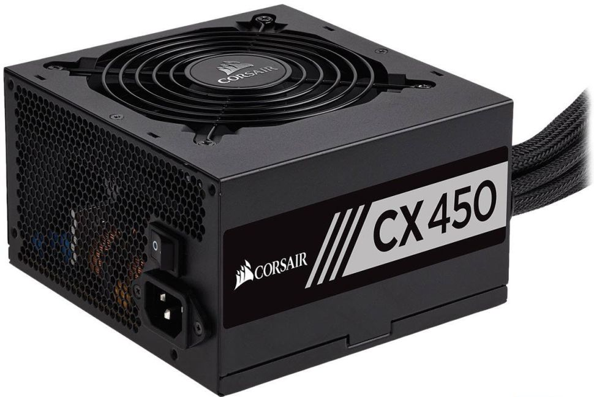

Of the two variants of Corsair's CX450, the Great Wall version is more
efficient than CWT's, especially under light loads, and has a more
efficient 5VSB rail. On the other side, it has a more-aggressive fan profile,
so its noise output is increased. In the US market, you will only find the
CWT version, which is made in Vietnam instead of China, so it avoids the
tariffs and keeps its price tag low.